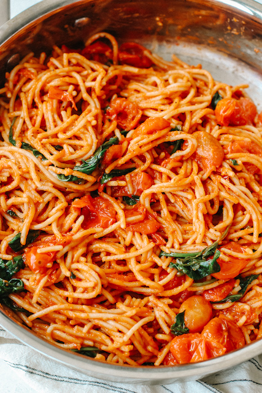

Tomato Basil Pasta

Description
A fresh, yet rich tasting tomato basil pasta. Use a whole
tomato instead of pre-made sauce to highlight the organic
taste that comes from the ingredient. The sauce will go well as
with all pasta of choice. The basil and parmigiano added at the
end will add extra flavor to make the dish even more enjoyable.
Ingredients
- 3 tablespoon extra virgin olive oil
- 1 can whole tomato
- 1/2 large onion
- 6 cloves garlic
- 1 teaspoon chili flakes
- 1 teaspoon oregano
- 1/2 cup basil
- salt and pepper to taste
- pasta of choice
Steps
- Chop the onion and the garlic
- Bring a large pot of salted water to boil
-
Heat the olive oil in a pan over medium heat until simmer.
Add the onion and garlic and saute until the union softens
and the garlic turns golden brown.
-
Crush the tomato and add to pan. Season with salt and pepper.
Turn the heat down to medium low and stir occasionally for
10 minutes.
-
when the tomato sauce has been reduced to almost half of original,
add the pasta to boiling water and cook al dente. Once cooked,
drain the water and add the pasta to the pan with the sauce.
Toss gently to combine.
- Add the basil leaves and the grated parmigiano.